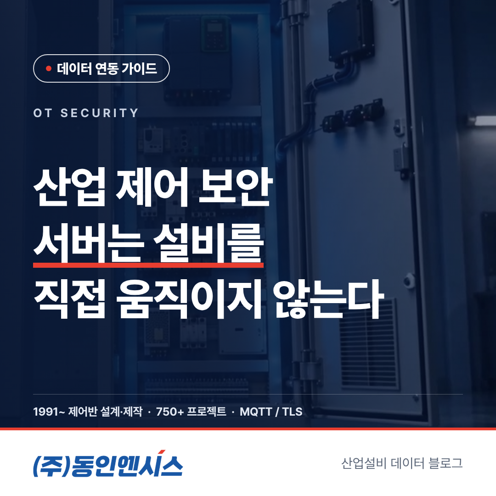
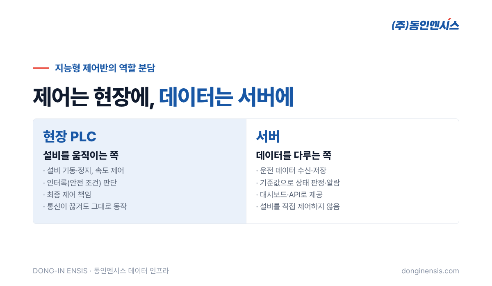
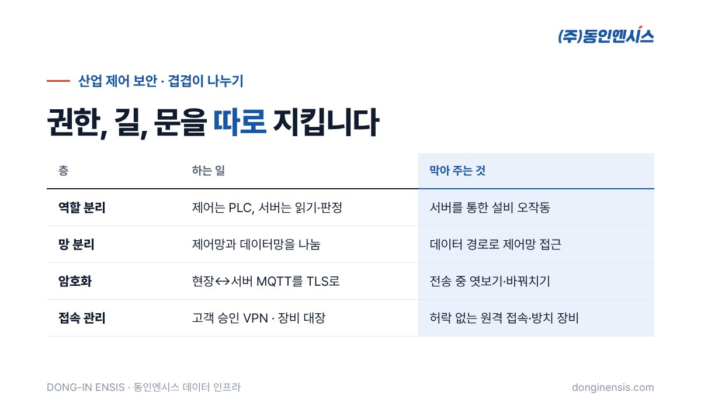

설비 데이터를 클라우드로 올리자는 이야기가 나오면, 공장 쪽에서 거의 빠지지 않고 나오는 질문이 있습니다. "그럼 밖에서 우리 설비를 켜고 끌 수 있게 되는 겁니까?" 슈나이더 일렉트릭 공식 SI 파트너로 750건 넘는 프로젝트의 제어반을 설계·제작해 온 동인엔시스는 이 질문에 "서버는 설비를 직접 제어하지 않습니다"라고 답합니다. 이 글에서는 산업 제어 보안을 암호화보다 한 걸음 앞에서, 즉 '누가 설비를 움직일 권한을 갖는가'라는 관점에서 풀어 봅니다.
설비 데이터 보안이라고 하면 보통 통신 암호화부터 떠올립니다. 물론 중요합니다. 동인엔시스 지능형 제어반도 현장과 서버 사이의 MQTT 통신을 TLS로 암호화합니다. 하지만 암호화는 '오가는 내용을 남이 엿보거나 바꾸지 못하게' 하는 장치입니다. 그 통로로 어떤 명령이 오갈 수 있는지는 또 다른 문제입니다.
공장 입장에서 정말 무서운 일은 데이터가 새는 것보다 설비가 엉뚱하게 움직이는 것입니다. 펌프가 갑자기 멈추거나, 멈춰 있어야 할 컨베이어가 돌기 시작하면 생산 손실을 넘어 사람이 다칠 수 있습니다. 그래서 산업 현장의 보안은 '무엇을 지킬 것인가'뿐 아니라 '무엇을 아예 할 수 없게 만들 것인가'를 함께 설계해야 합니다.
지능형 제어반 구조에서 역할은 분명하게 나뉩니다. 현장의 PLC는 설비를 실제로 움직이고, 위험한 조건에서 설비를 멈추는 인터록과 최종 제어를 맡습니다. 서버는 그 PLC가 보내 주는 운전 데이터를 받아 저장하고, 기준과 비교해 상태를 판정하고, 화면과 API로 보여 주는 일을 합니다.
이렇게 나누면 서버 쪽에 문제가 생겨도 설비가 흔들리지 않습니다. 서버가 멈추거나 네트워크가 끊겨도 현장의 PLC는 원래 하던 대로 설비를 돌리고, 안전 조건도 그대로 지킵니다. 반대로 누군가 서버에 잘못 접근하더라도, 서버에서 설비를 움직이는 길이 처음부터 없다면 피해는 데이터 쪽에서 멈춥니다.

인터록은 '이 조건이 갖춰지지 않으면 설비가 움직이지 못하게' 묶어 두는 논리입니다. 예를 들어 흡입 쪽 밸브가 닫혀 있으면 펌프가 기동하지 않게 하거나, 문이 열려 있으면 기계가 돌지 않게 하는 식입니다. 이 판단을 서버가 아니라 현장 PLC에 두는 데에는 이유가 있습니다.
안전과 관련된 판단은 순간에 이뤄져야 합니다. 현장 PLC는 설비 바로 옆에서 신호를 받아 곧바로 판단하지만, 서버를 거치면 네트워크를 오가는 시간이 생깁니다. 평소에는 짧은 시간이라도, 통신이 느려지는 순간이 하필 위험한 순간과 겹칠 수 있습니다.
네트워크는 언젠가 끊깁니다. 공사 중에 선이 잘릴 수도 있고, 통신 장비가 고장 날 수도 있습니다. 안전 판단이 서버에 있다면 그 순간 설비는 보호를 잃습니다. 현장에 있으면 통신 상태와 관계없이 보호가 유지됩니다. 지능형 제어반이 통신 장애 중 데이터를 제어반에 보관했다가 나중에 다시 보내는 것도, 현장이 스스로 버티는 구조라서 가능한 일입니다.
설비를 누가 움직였는지가 분명해야 사고가 났을 때 원인을 찾을 수 있습니다. 제어는 현장 PLC, 데이터는 서버라는 경계가 명확하면, 문제가 생겼을 때 어디를 봐야 하는지도 분명해집니다. 제어 로직을 고칠 때도 현장 쪽 변경 절차를 거치게 되어, 누가 언제 무엇을 바꿨는지 관리하기 쉬워집니다.
새 지능형 제어반이 아니라 이미 돌고 있는 타사 PLC에서 데이터를 가져올 때도 같은 원칙을 지킵니다. 미쓰비시, LS, 지멘스처럼 이미 설치된 PLC는 값을 읽어 오기만 하고, 그 PLC의 프로그램이나 설정값에는 손대지 않습니다. OPC UA로 붙든 Modbus TCP나 제조사 전용 통신으로 붙든, 데이터가 흐르는 방향은 PLC에서 바깥쪽 한 방향뿐입니다.
IT기업 입장에서도 이 원칙은 부담을 덜어 줍니다. 수많은 현장 설비의 제어 로직을 이해하고 책임질 필요 없이, 정리된 데이터를 받아 서비스에 집중할 수 있기 때문입니다. 지능형 제어반이 제공하는 REST API도 설비·센서 목록, 최신값, 기간 이력처럼 데이터를 꺼내 보는 쪽으로 구성되어 있습니다.
Photorealistic close-up photo of the inside of an open light-grey industrial control cabinet in a Korean factory: a generic unbranded PLC rack with status LEDs, neatly labeled terminal blocks without readable text, a separate network switch with two clearly separated cable bundles in blue and grey, soft daylight, shallow depth of field, no brand logos, no readable text. 3:2 landscape.
역할을 나눈 다음에는 길을 나눕니다. 설비를 움직이는 신호가 흐르는 제어망과, 수집한 데이터가 서버로 나가는 데이터망을 분리합니다. 데이터를 보내는 길이 열려 있다고 해서 제어망까지 함께 열리지 않도록 하는 것입니다.
사람이 원격으로 들어와야 하는 경우도 있습니다. 프로그램을 점검하거나 문제를 함께 살펴볼 때입니다. 이때는 고객이 승인한 VPN으로만 접속합니다. 언제든 들어올 수 있는 문을 열어 두는 대신, 필요할 때 고객이 허락한 문으로만 들어오는 방식입니다. 여기에 제어반마다 PLC 모델과 버전, 인증서 만료일을 대장으로 관리해, 오래된 상태로 방치되는 장비가 없도록 챙깁니다.

Photorealistic photo of a small on-premise server rack in a tidy factory office room in Korea, an engineer in a work jacket looking at a laptop with generic line charts, a window behind showing the factory floor with motors and pipes, cool neutral lighting, no brand logos, no readable text. 3:2 landscape.
요즘은 데이터를 보기만 하는 데서 나아가, AI가 찾은 운전값을 현장에 돌려보내는 방식도 이야기됩니다. 동인엔시스도 AI가 찾은 최적 운전값을 현장 PLC로 보내는 폐루프 방식을 실증 단계에서 개발하고 있습니다.
이런 구조에서도 원칙은 같습니다. 서버나 AI가 보내는 것은 운전값이고, 그 값을 받아 설비를 실제로 움직이고 위험한 조건을 걸러 내는 일은 여전히 현장 PLC의 몫입니다. 인터록과 최종 제어가 현장에 남아 있어야, 새로운 기능을 붙여도 설비의 안전선은 그대로 지켜집니다.
Q. 대시보드에서 설비를 끄고 켜는 버튼을 만들 수는 없나요? 기본 구조에서 서버는 설비를 직접 제어하지 않습니다. 원격 조작이 꼭 필요한 현장이라면 안전 요건과 책임 범위를 먼저 검토해야 하며, 일반적인 데이터 연동과는 별개의 문제로 다룹니다.
Q. 타사 PLC에서 데이터를 읽어 오면 그 PLC 동작에 영향이 있나요? 값을 읽기만 하고 프로그램이나 설정은 바꾸지 않습니다. 다만 통신 부하가 생길 수 있어 연결 방식과 주기는 현장 상황을 보고 정합니다.
Q. 산업 제어 보안 때문에 외부 클라우드를 쓸 수 없는 공장은요? 고객사 서버와 사내망 안에서만 운영하는 온프레미스형으로도 구축할 수 있습니다. 외부 연결 없이 운영하는 방식입니다.
Q. IT기업이 MQTT 메시지 형식을 미리 볼 수 있나요? 토픽 구조와 메시지 형식, 태그 규칙은 버전으로 관리하며 세부 문서는 NDA를 맺은 뒤 제공합니다.
산업 제어 보안의 출발점은 '연결하지 않는 것'이 아니라 '어디까지 연결할지 선을 긋는 것'입니다. 제어는 현장 PLC에, 데이터는 서버에 두고, 망을 나누고, 접속은 승인된 길로만 허용하면 공장은 설비 데이터를 내보내는 일을 훨씬 덜 불안하게 받아들입니다. 그리고 그 선이 분명할수록 IT기업도 데이터 서비스에 집중할 수 있습니다.
설비 데이터 연동을 준비하면서 보안 구조를 어떻게 설명해야 할지 고민이라면, IT기업 협업 문의로 프로젝트 상황을 알려 주세요. 기술 미팅에서 현장 구조를 함께 짚어 드립니다. 문의 전화는 051-862-3668, 메일은 dongin@donginmne.com입니다.
아래 질문 중 하나에 실제 경험으로 답해 본문 적당한 곳에 넣어 주세요. 사람이 직접 쓴 문장이 들어가면 네이버에서 저품질 위험이 줄고 노출에 도움이 됩니다.